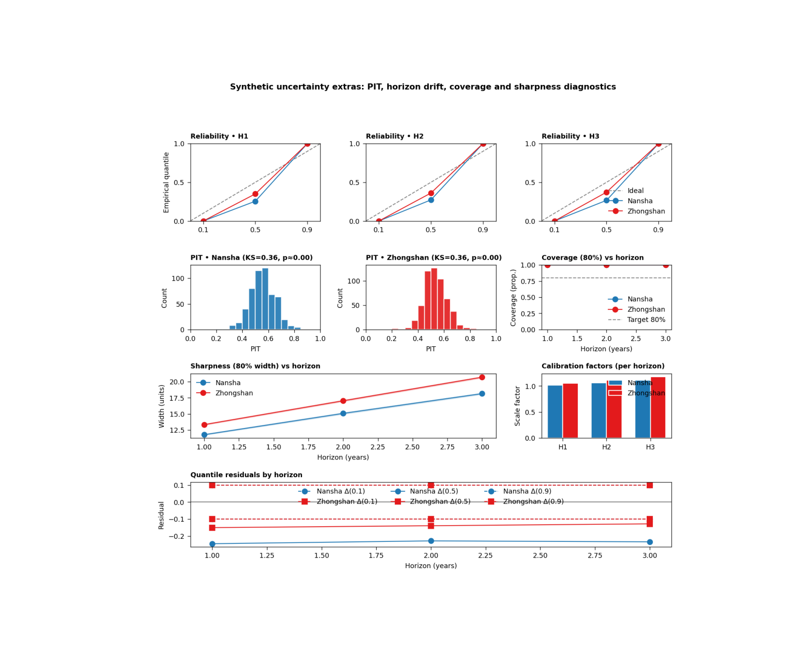

Note
Go to the end to download the full example code.
Expanded uncertainty diagnostics: learning what the main uncertainty figure still hides#
This example teaches you how to read the GeoPrior uncertainty-extras figure.
The main uncertainty figure answers broad questions about:
overall reliability,
horizon-wise reliability,
and the sharpness–coverage balance.
This supplementary page goes further. It asks:
What does uncertainty look like when we inspect PIT behavior, bootstrap confidence intervals, horizon-wise calibration factors, and quantile residual drift together?
That is why this figure is useful. It is a deeper uncertainty audit, not just a second version of the same plot.
What the figure shows#
The real plotting backend builds six uncertainty views on one page:
reliability small multiples by horizon,
PIT histogram for Nansha,
PIT histogram for Zhongshan,
coverage80 versus horizon with bootstrap confidence bands,
sharpness80 versus horizon with bootstrap confidence bands,
optional horizon-wise calibration factors,
quantile residuals by horizon.
In the actual script, the figure is created by plot_s5(...),
the summary tables are written by write_tables(...), and the
CLI entrypoint is supp_figS5_uncertainty_extras_main(...).
The script accepts the text controls
show_legend, show_labels, show_ticklabels,
show_title, and show_panel_titles. It does not
use panel-label controls.
Why this matters#
A model can look acceptably calibrated in one headline figure and still reveal important problems when you look closer:
the PIT may still be far from uniform,
later horizons may lose coverage,
interval widths may widen too fast,
and one city may need stronger post-hoc calibration factors than the other.
This gallery page creates compact synthetic forecast tables and small metadata blocks so the example is fully executable during documentation builds.
Imports#
We use the real helper functions and plotting backend from the project script. For gallery use, we surface the PNG output directly.
from __future__ import annotations
import tempfile
from pathlib import Path
import matplotlib.image as mpimg
import matplotlib.pyplot as plt
import numpy as np
import pandas as pd
from geoprior._scripts import plot_uncertainty_extras as pux
Step 1 - Build compact synthetic forecast tables#
The real script expects calibrated forecast CSVs with:
forecast_step
subsidence_q10
subsidence_q50
subsidence_q90
subsidence_actual
We build two synthetic cities over three forecast horizons. Nansha is made a little better calibrated; Zhongshan is a bit wider and slightly more biased.
rng = np.random.default_rng(31)
def make_city_forecast(
*,
city: str,
n_per_h: int,
bias_scale: float,
spread_scale: float,
noise_scale: float,
) -> pd.DataFrame:
rows: list[pd.DataFrame] = []
for h in [1, 2, 3]:
base = 10.0 + 4.5 * h
latent = rng.normal(
base,
3.8 + 0.8 * h,
size=n_per_h,
)
q50 = (
0.93 * latent
+ bias_scale * h
+ rng.normal(0.0, 0.9, size=n_per_h)
)
width = (
spread_scale * (4.2 + 1.6 * h)
+ 0.12 * np.abs(q50 - np.median(q50))
)
q10 = q50 - width
q90 = q50 + width
y = latent + rng.normal(
0.0,
noise_scale * (1.0 + 0.18 * h),
size=n_per_h,
)
rows.append(
pd.DataFrame(
{
"forecast_step": np.full(n_per_h, h),
"subsidence_actual": y,
"subsidence_q10": q10,
"subsidence_q50": q50,
"subsidence_q90": q90,
"city": city,
}
)
)
return pd.concat(rows, ignore_index=True)
ns_df = make_city_forecast(
city="Nansha",
n_per_h=180,
bias_scale=0.10,
spread_scale=0.95,
noise_scale=0.95,
)
zh_df = make_city_forecast(
city="Zhongshan",
n_per_h=180,
bias_scale=0.30,
spread_scale=1.08,
noise_scale=1.08,
)
print("Synthetic forecast rows")
print(f" Nansha: {len(ns_df)}")
print(f" Zhongshan: {len(zh_df)}")
Synthetic forecast rows
Nansha: 540
Zhongshan: 540
Step 2 - Build small JSON-like calibration metadata#
The real script can extract:
interval_calibration.factors_per_horizon
from a GeoPrior physics JSON file. It accepts both a list form and a dict form such as {“H1”: …, “H2”: …}. We use one of each here to show that both work.
ns_meta = {
"interval_calibration": {
"factors_per_horizon": [1.02, 1.06, 1.11]
}
}
zh_meta = {
"interval_calibration": {
"factors_per_horizon": {
"H1": 1.05,
"H2": 1.11,
"H3": 1.18,
}
}
}
factors_n = pux._extract_factors_per_horizon(ns_meta)
factors_z = pux._extract_factors_per_horizon(zh_meta)
print("")
print("Extracted calibration factors")
print(f" Nansha: {factors_n}")
print(f" Zhongshan: {factors_z}")
Extracted calibration factors
Nansha: [1.02, 1.06, 1.11]
Zhongshan: [1.05, 1.11, 1.18]
Step 3 - Build the real per-city summaries#
The script uses summarize_city(…) to compute:
horizon-wise coverage80 and sharpness80,
bootstrap confidence intervals,
reliability points by horizon,
PIT values and KS statistics,
quantile residuals by horizon.
nansha = pux.summarize_city(
ns_df,
city="Nansha",
B=300,
)
zhongshan = pux.summarize_city(
zh_df,
city="Zhongshan",
B=300,
)
print("")
print("Nansha summary keys")
print(sorted(nansha.keys()))
print("")
print("Zhongshan summary keys")
print(sorted(zhongshan.keys()))
Nansha summary keys
['city', 'coverage80', 'coverage80_ci', 'horizons', 'ks_D', 'ks_p', 'pit', 'qresiduals', 'reliability', 'sharpness80', 'sharpness80_ci']
Zhongshan summary keys
['city', 'coverage80', 'coverage80_ci', 'horizons', 'ks_D', 'ks_p', 'pit', 'qresiduals', 'reliability', 'sharpness80', 'sharpness80_ci']
Step 4 - Render the real S5 figure#
We call the actual plotting backend. For the gallery page we keep only the PNG output by temporarily replacing the shared saver. This keeps the lesson aligned with your current docs preference: show the PNG, not PDF/EPS.
tmp_dir = Path(
tempfile.mkdtemp(prefix="gp_sg_uncx_")
)
out_base = tmp_dir / "uncertainty_extras_gallery"
table_csv = tmp_dir / "uncertainty_extras_gallery.csv"
table_tex = tmp_dir / "uncertainty_extras_gallery.tex"
_orig_save_figure = pux.utils.save_figure
def _save_png_only(fig, out, *, dpi):
p = Path(out)
if p.suffix:
p = p.with_suffix("")
fig.savefig(
str(p) + ".png",
dpi=int(dpi),
bbox_inches="tight",
)
plt.close(fig)
pux.utils.save_figure = _save_png_only
try:
pux.plot_s5(
nansha=nansha,
zhongshan=zhongshan,
factors_n=factors_n,
factors_z=factors_z,
out_stem=out_base,
dpi=160,
show_legends=True,
show_labels=True,
show_ticklabels=True,
show_title=True,
show_panel_titles=True,
title=(
"Synthetic uncertainty extras: PIT, horizon drift, "
"coverage and sharpness diagnostics"
),
)
finally:
pux.utils.save_figure = _orig_save_figure
Step 5 - Write the real summary tables#
The script also writes a CSV and a TeX table with the per-horizon coverage80, sharpness80, and PIT KS statistics. We keep that
Step 6 - Show the PNG produced by the backend#
The gallery page displays the actual PNG result generated by the project plotting code.
img = mpimg.imread(str(out_base) + ".png")
fig, ax = plt.subplots(figsize=(10.0, 8.0))
ax.imshow(img)
ax.axis("off")

(np.float64(-0.5), np.float64(1381.5), np.float64(1309.5), np.float64(-0.5))
Step 7 - Read the exported summary table#
The exported table is a compact audit of the key horizon-wise uncertainty quantities.
tbl = pd.read_csv(table_csv)
print("")
print("Exported summary table")
print(tbl.to_string(index=False))
Exported summary table
city horizon coverage80 coverage80_lo coverage80_hi sharpness80 sharpness80_lo sharpness80_hi ks_D ks_p
Nansha 1 1.0 1.0 1.0 11.790403 11.720734 11.886270 0.360131 2.946891e-61
Nansha 2 1.0 1.0 1.0 15.088050 14.961306 15.201147 0.360131 2.946891e-61
Nansha 3 1.0 1.0 1.0 18.146694 18.024554 18.259007 0.360131 2.946891e-61
Zhongshan 1 1.0 1.0 1.0 13.350309 13.266079 13.437570 0.355357 1.178951e-59
Zhongshan 2 1.0 1.0 1.0 17.038827 16.923196 17.155463 0.355357 1.178951e-59
Zhongshan 3 1.0 1.0 1.0 20.691352 20.563640 20.797815 0.355357 1.178951e-59
Step 8 - Learn how to read the reliability row#
The top row contains one small reliability panel per horizon.
Each panel compares:
nominal quantiles
empirical quantiles
The dashed diagonal is the ideal relationship.
This row is useful because it reveals horizon-specific drift directly. A model that looks acceptable overall can still become underconfident or overconfident at later horizons.
Step 9 - Learn how to read the PIT panels#
The PIT histograms are a stronger calibration stress test.
A well-calibrated forecast tends to produce a PIT distribution that is close to uniform.
The script also reports a KS statistic and an approximate KS p-value in the panel title. A large KS statistic or a strongly shaped histogram suggests that the forecast distribution is not matching the observations well.
Step 10 - Learn how to read coverage and sharpness#
The next two panels summarize interval behavior across horizon.
Coverage panel#
This shows empirical 80% interval coverage together with bootstrap confidence bands and a dashed 0.80 target line.
Step 11 - Learn how to read the calibration-factor panel#
If horizon-specific post-hoc calibration factors are available, the script shows them as grouped bars by city.
This panel is especially useful because it answers:
“How much extra interval scaling did each horizon need?”
Larger factors usually mean that the raw predictive intervals were too narrow and needed to be widened more strongly.
Step 12 - Learn how to read quantile residuals#
The bottom panel shows horizon-wise residuals for q10, q50, and q90:
empirical - nominal
A residual near zero is good.
Positive residuals mean the empirical quantile lies above the nominal target; negative residuals mean it lies below.
This panel is valuable because it separates where the calibration error lives:
lower tail,
median,
or upper tail.
Step 13 - Practical takeaway#
This figure is one of the best uncertainty-audit pages in the whole gallery because it combines:
reliability by horizon,
PIT behavior,
coverage with confidence bands,
sharpness with confidence bands,
optional horizon calibration factors,
and quantile residual drift.
In practice, it helps move from:
“The intervals look okay”
to:
“The intervals are okay, here is where they drift, and here is how much recalibration each horizon needed.”
Command-line version#
The same figure can be produced from the command line.
The real script supports:
--ns-srcand--zh-srcfor artifact discovery,--ns-forecastand--zh-forecastfor direct CSV overrides,--ns-phys-jsonand--zh-phys-jsonfor metadata overrides,--splitwithauto | val | test,--bootstrapfor CI draws,--tables-stemfor the CSV/TEX summary table,the shared text flags added through
utils.add_plot_text_args(..., default_out="supp-fig-s5-uncertainty-extras"),and the backward-friendly
--no-legendsswitch.
Legacy dispatcher:
python -m scripts plot-uncertainty-extras \
--ns-src results/nansha_stage2_run \
--zh-src results/zhongshan_stage2_run \
--split auto \
--bootstrap 1000 \
--out supp-fig-s5-uncertainty-extras \
--tables-stem supp-table-s5-reliability
Direct CSV override:
python -m scripts plot-uncertainty-extras \
--ns-forecast results/ns_calibrated.csv \
--zh-forecast results/zh_calibrated.csv \
--ns-phys-json results/ns_phys.json \
--zh-phys-json results/zh_phys.json \
--no-legends \
--out supp-fig-s5-uncertainty-extras
Modern CLI:
geoprior plot uncertainty-extras \
--ns-src results/nansha_stage2_run \
--zh-src results/zhongshan_stage2_run \
--out supp-fig-s5-uncertainty-extras
The gallery page teaches the figure. The command line reproduces it in a workflow.
Total running time of the script: (0 minutes 3.883 seconds)